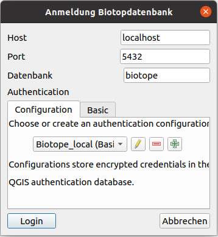

Anmeldung¶
Wenn der GBD Biotopmanager gestartet wurde, erfolgt zuerst eine Anmeldung, um auf die Biotope Datenbank zugreifen zu können. Klicken Sie dazu auf 
Login Biotopmanager Datenbank, wodurch sich das folgende Anmeldefenster öffnet.

Hier kann nun die Datenbankverbindung eingetragen werden, für die Benutzerauthentifizierung stehen die Basic-Methode mit Benutzer und Passwort oder das QGIS Authentifizierungssystem zur Verfügung. In der Einführung wurde drauf hingewiesen, dass die Daten in einer PostgreSQL/PostGIS Datenbank ablegt sind und dort gemanaged werden.
Wenn der Benutzer mit Passwort und die gewünschte Datenbank eingetragen wurden klickt man auf Login. Nun lädt das Plugin die Daten aus der PostGIS-Datenbank und stellt diese als Layer da.